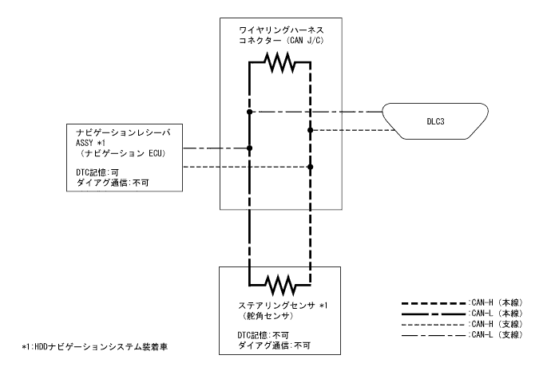

CAN通信システム（ＶＳＣなし） 回路図
印刷

□ 参 考 □
HDDナビゲーションシステム装着車のステアリングセンサ(舵角センサ)のダイアグ検出およびダイアグ記憶は、ナビゲーションレシーバASSY(ナビゲーションECU)にて行っている。
ナビゲーションレシーバASSY(ナビゲーションECU)はTaSCANにてダイアグ通信できないため、ディスプレイ(画面)にてダイアグを表示する。(要領は
参照)
 参照)
参照)